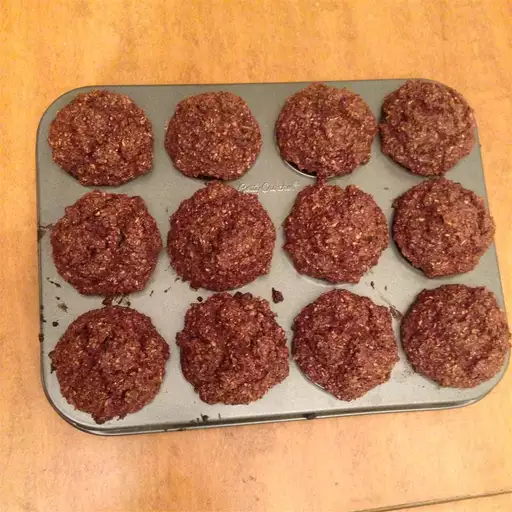

Home
Banana Muffins

Delicious Banana Vegan Muffins (Sugar Free)
Packed with fiber and vitamins! These muffins are delicious in the morning shared with yogurt or even better just as a snack during the day! My mom gave me this recipe a year ago and ever since, I've had tons of compliments on them! Friends can never believe they are vegan and sugar free!
They are very moist muffins so don't worry, they are supposed to be like this. Also, be sure to keep them in the fridge!
Of course you can replace nuts/raisins/chocolate chips with whatever you want. I once used sliced almonds. Very, very good!
Ingredients
- 1 cup all-purpose flour
- 1 cup wheat bran
- ½ cup rolled oats
- ¼ cup flax seeds
- 1 tablespoon baking powder
Steps
- Preheat oven to 350 degrees F (175 degrees C). Grease 16 muffin cups or line with paper liners.
- Whisk flour, bran, rolled oats, flax seeds, baking powder, baking soda, cinnamon, salt, ginger, allspice, and nutmeg together in a bowl. Mix bananas and peanut oil together in a separate large bowl; stir dry ingredients into banana mixture. Fold walnuts, chocolate chips, and raisins into batter. Spoon batter into prepared muffin cups, filling them about 2/3 full.
- Bake muffins in the preheated oven until lightly golden brown and a knife inserted into the center of a muffin comes out clean, about 30 minutes.